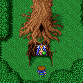

Story Line
(A)
ช่องว่างระหว่างมิติ
Cleft of Dimension
ขับเรือเหาะไปเหนือหลุมดำ บริเวณที่เคยเป็นปราสาท Tycoon จะถูกดูดลงไป
ซึ่งภายในคือ "Cleft of Dimension"
ใน "Cleft of Dimension" จะเป็นสถานที่หลายๆ แห่งที่อยู่ในช่องว่างระหว่างเวลา
ซึ่งเส้นทางจะมีความเปลี่ยนแปลงไปได้เรื่อยๆ
โดยจะแบ่งออกเป็นหลายๆ โซน เรียงตามลำดับได้ ดังนี้
Sand Tides

ช่วงแรกของ "Cleft of Dimension" จะเป็นทะเลทราย
เมื่อเดินไปสักพักจะเจอกับลูกสมุนของ Exdeath ออกมาขู่พวก Butz
Lonka Ruined
ในส่วนนี้ ศัตรูจะมี Learning Magic หลายตัวทีเดียว
หากยังเก็บมาไม่ครบสามารถเก็บได้จากที่นี่
Mirage Town
ภายในจะเป็นเหมือนกับหมู่บ้าน Mirage แต่เวลาจะหยุดนิ่ง
ไม่สามารถคุยกับผู้คนได้ และไม่มีศัตรูโจมตีด้วยในส่วนนี้
เดินออกนอกหมู่บ้านจะเจอกับโซนใหม่
Mua Forest

ภายในจะเป็นป่า Mua ซึ่งมี Item ดีๆ ให้เก็บหลายชิ้น
ไม่ว่าจะเป็น Ribbon, ดาบ Enhancer, ไม้เท้า
Lillith
และเมื่อไปสำรวจโพรงใต้ต้นไม้ (ดังรูป) จะมีทางลับโผล่ออกมา
แต่จะเจอลูกสมุนของ Exdeath ออกมาโจมตี
Boss : Calofisteri (Wood Sprite)
Level : 68
HP : 18,000
การต่อสู้กับ Calofisteri หากโจมตีทางกายภาพใส่เธอ จะถูกสวนกลับด้วยการดูด
HP
แก้ไขได้ด้วยการใส่เกราะ Bonemail ทำให้ติดสถานะ "ผีดิบ"
เมื่อโดนดูด HP จะกลายเป็น Calofisteri จะเสีย HP แทน
และหากใช้เวทย์มนต์กับเธอ เธอจะร่ายเวทย์ Reflect ทำให้สะท้อนเวทย์กลับ
ให้โจมตีด้วยเวทย์มนต์ที่ไม่สามารถสะท้อนกลับได้ เช่น Meteor,
Summon, Blue
Magic
เมื่อปราบได้จะสามารถเข้าทางลับได้แล้ว
Waterway Cave

ระหว่างทางจะเจอกับ Omega
Boss :
Omega
Level : 119 (-_-")
HP : 60,000
Weakness : Lightning
Boss สุดโหด โหดที่สุด สุดสุดแห่งความหฤโหด
หลีกเลี่ยงได้เป็นหลีกเลี่ยง ไม่ควรต่อสู้ด้วยเป็นอย่างยิ่ง
แต่หากพร้อมแล้ว สามารถเข้าไปต่อสู้ได้ (ควรมี Level 60-70+++ เป็นดีที่สุด)
สิ่งจำเป็นที่สำคัญในการต่อสู้มากๆ คือ
Big Guard, Haste2, X-Fight และดาบเวทย์สายฟ้า 3 (Bolt 3)
Omega มีรูปแบบการโจมตีที่หลากหลายมาก
ไม่ว่าจะเป็นการทำให้กลายเป็นหิน
วาร์ปออกจากการต่อสู้ (อันนี้โหดมาก ทำให้ตัวละครหายไปเลย)
ยิงแสงเลเซอร์ ยิงไฟ พ่นไฟ ระเบิด ทำให้สับสน อัมพาต และอีกสารพัด
ที่แย่ก็คือ Omega มีเร็วสูงมาก และจะโจมตีอย่างต่อเนื่อง ไม่มีการหยุดพัก
อีกทั้งการโจมตีทางด้านกายภาพ ก็ทำได้ยากเช่นกัน
หากพวก Butz มี Level ที่น้อย จะโจมตี Omega ลด 0 ตลอด
รวมทั้ง Omega ยังดูดซับพลังจากอาวุธศักดิ์สิทธิ์อีกด้วย
การโจมตีทางด้านกายภาพให้โดนแน่นอน ควรใช้ X-Fight
เมื่อปราบได้จะได้รับสัญลักษณ์ของ Omega (Omega
Badge)
Library
ภายในห้องสมุด มีหลังสืออยู่ 3 เล่ม
เล่มด้านซ้าย จะกล่าวเกี่ยวกับ Omega Flare
เล่มด้านขวา กล่าวเกี่ยวกับ Omega และ Shinryuu
ส่วนเล่มล่าง จะเจอกับลูกสมุนของ Exdeath
Boss : Apanda (Apprehendr)
Level : 59
HP : 22,000
Weakness : Fire
Apanda จะสวนกลับด้วยการดูด HP และร่ายเวทย์ Protect ใส่ตัวมันเอง
หรือบางครั้งอาจสวนกลับด้วยเวทย์ Toad
เมื่อปราบได้ให้เปิดหนังสือ แล้วกลับออกไปทางเดิม
แต่จะกลายเป็นสถานที่ใหม่
Tower
เมื่อออกมาจากห้องสมุด จะเจอหอคอย
ซึ่งทางเดินจะเป็นทางเดินล่องหน ให้ทดลองเดินผ่านไป จะผ่านไปได้
ภายในจะมีศัตรูอยู่ตัวหนึ่งที่สามารถ "ขโมย" ธนู Atemis
ได้

Avis Dragon (Dragon Avis) ขโมยได้ Trident (Rare : Atemis)
Level : 49
HP : 7,000
Weakness : Wind
Castle
ภายในส่วนนี้จะเจอศัตรูถูกขังอยู่ในห้องขัง
Alte Roite & Jura Avis
Alte Roite
Level : 58
HP : 6,000
Jura Avis
Level : 61
HP : 15,000
เมื่อปราบ Alte Roite แล้ว Jura Avis จะโผล่ออกมา
ด้านล่างซ้าย ในห้องขังจะมี Boss อีกตัวหนึ่ง
Boss : Apocalypse (Azulmagia)
Level : 57
HP : 27,900
Weakness : Poison
Apocalypse มี Learning Magic
ครบทุกเวทย์
หากยังไม่มีเวทย์ใด สามารถเก็บจาก Apocalypse ได้
และหาก "ขโมย" จะได้รับ Giant's
Glove ซึ่งเป็นเครื่องประดับที่ดีมาก
Giant's Glove Def 9, Vigor +5, Stamina +5, Mag -5, Speed -5
แต่ส่วนใหญ่แล้วจะขโมยได้ Elixir เพราะ Giant's Glove เป็น Rare
หากต้องการ Giant's Glove จริงๆ สามารถทำได้
โดย หากขโมยแล้วได้ Elixir ให้ใช้เวทย์ Return เพื่อเริ่มการต่อสู้ใหม่
จากนั้นก็ขโมยให้ได้ Giant's Glove
เมื่อปราบ Apocalypse ได้แล้ว บริเวณที่มันยืนอยู่จะกลายเป็นจุด
Save
จากนั้นเดินไปที่ประตูห้องขังด้านขวาบน จะโดน "ลูกตา"
โจมตี
Boss : Catastroph
Level : 71
HP : 19,997
เมื่อออกมาด้านนอก ด้านซ้ายจะมีทางลง
เมื่อลงไปจะมีทางลับไปเก็บมีดสั้น Man
Eater มีดสั้นที่ดีมาก
Man Eater Att +89, Speed, Vigor, Stamina, and Mag. Pwr +2
เมื่อเดินเข้าไปในปราสาท Butz จะโดนพลังดูดไปนั่งตรงบัลลังก์
และจะเจอผู้หญิงที่ถูกขังอยู่ในห้องขัง
แท้จริงแล้ว เธอเป็นลูกสมุนของ Exdeath
Boss : Halicarnaso (Halycanos)
Level : 97
HP : 33,333
เมื่อเริ่มการต่อสู้ Halicarnaso จะทำให้พวก Butz กลายเป็น "กบ"
ทุกคน
วิธีแก้คือ ให้ใช้เวทย์ "Toad" กับทุกคน ก่อนเข้าการต่อสู้
เมื่อ Halicarnaso พยายามทำให้พวก Butz กลายเป็น "กบ"
ทุกคนจะคืนร่างเดิม
หากใช้เวทย์ Summon โจมตี Halicarnaso จะโจมตีสวนกลับอย่างรุนแรง
(5,000+)
หากขโมยจะได้รับ Light Staff
เมื่อออกไปจะเจอลูกสมุนของ Exdeath ขวางทาง
Boss : Twin Tania
Level : 39
HP : 50,000
Weakness : Water, Holy
Twin Tania จะใช้ Tidal Wave โจมตี ซึ่งรุนแรงมาก (2,000+)
ให้สวมใส่แหวน Coral Ring ทุกคน
จะดูดซับ Tidal Wave ได้
เมื่อไปถึงยอดปราสาท จะมีทางวาร์ปไปยัง Void
Next
to Story B